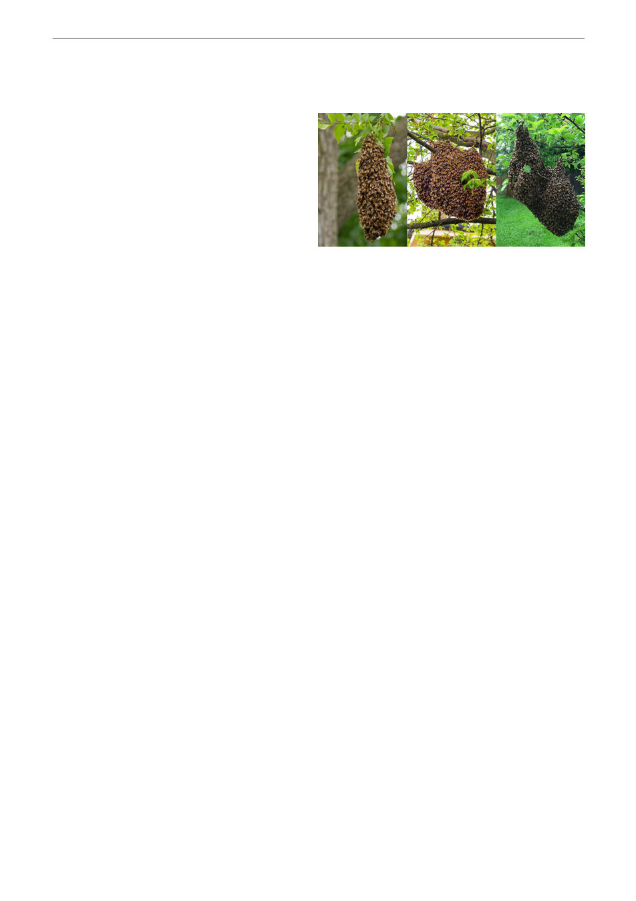

Next month (September) in the hive
(by Gary Montgomery)
September
© Geelong Beekeepers Club, P.O. Box 401,
Geelong. Vic. 3220 A0051603G
Swarming
What is it? Its Impact on the hive
Swarming is a bee colony's way of surviving
and multiplying. A swarm occurs when the
current (old) queen leaves the hive with approximately half of the worker bees. This loss of bees
(5000+) seriously impacts on a hives capacity to gather nectar for the remainder of the season.
It may also upset neighbours who are subject to the swarming process, or who end up with the
swarm establishing themselves as a new colony in their residence.
Swarming generally occurs in spring (Sept) through until early summer (mid December) although
there are no guarantees of when swarming may commence!!
Initial stimulus for swarming occurs when there is little room in the hive for the queen to lay, the
build up of brood is rapid, replacement queen cells are present in the hive and it is a warm, sunny
day.
Most swarms occur between 10am / 2pm.
After a swarm emerges from a hive it will generally settle on a bush, post or tree branch anywhere
from 5 to 150 metres from the hive. It may remain there for up to 3 days, whilst scout bees search
out a suitable spot for the swarm to relocate to and commence a new colony.
Whilst most hives produce a “prime swarm”, some hives may also produce secondary (“after”)
swarms if not quickly checked to remove any further queen cells which further depletes a hives
productive capacity
After the prime swarm leaves the hive, a virgin queen will emerge and immediately kill any
remaining queens not yet emerged from their cells. She takes several mating flights and then
commences egg laying. This may be up to 3 weeks after the swarm has left, causing significant
delay in the brood rearing process and nectar gathering capacity of the hive.
Causes of Swarming
Where bees have access to significant amounts of good pollen, coupled with a light nectar flow, as
frequently available in urban residential areas, or in rural areas from cape weed or a nearby canola
crop, they are far more likely to swarm.
Lack of available room in the brood box will significantly increase the probability of swarming. The
addition of a “super” to a single brood box will reduce, but not entirely eliminate the likelihood of
swarming. A very careful check needs to be maintained to ensure adequate room is always
available for the queen to lay eggs and the workers to store nectar.
Warning signs of potential swarming
One of the key signs is completed queen cells. Shaped like a “peanut,” these are generally found
along the sides, or bottom of comb in the brood box.